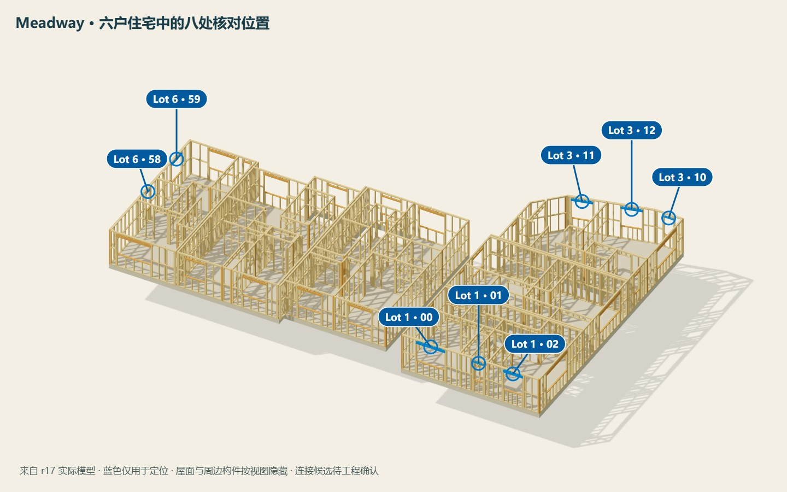
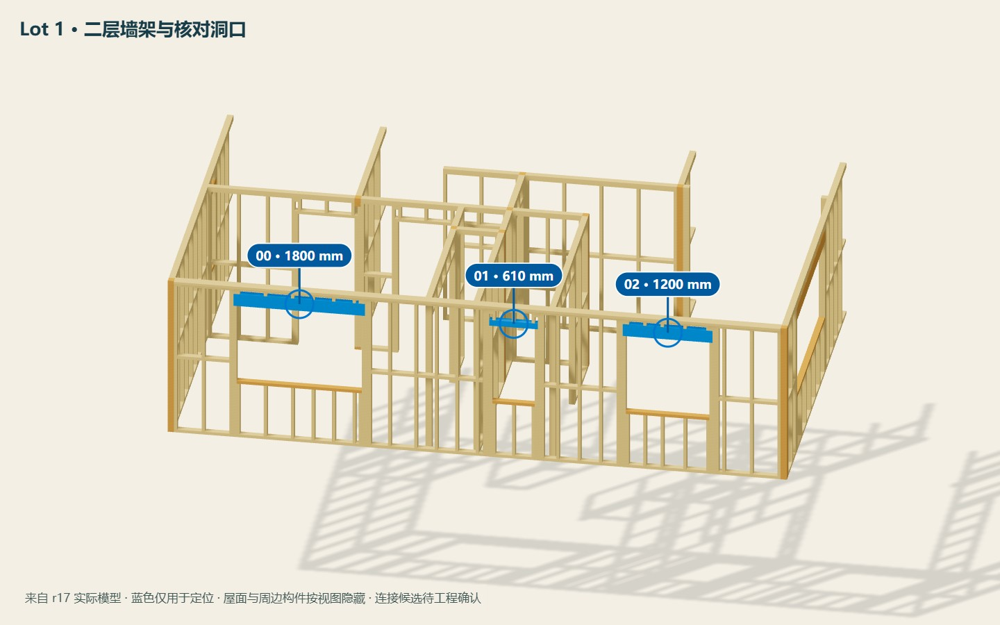
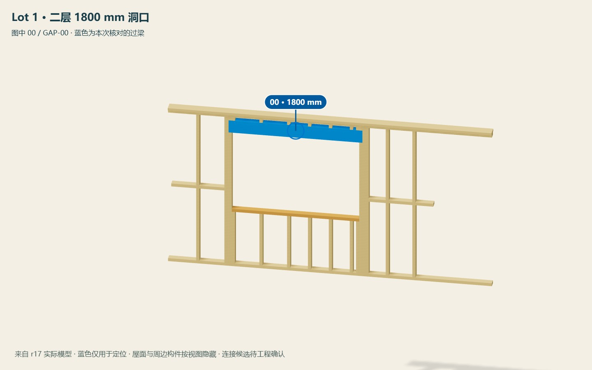

先在整组中找到所选房屋；蓝色梁仅用于定位。
Meadway 八个普通屋架受荷洞口 · 供项目工程师核对 · 2026-11-07
目前暂按 Medium（M）做连接候选：8 个洞口中，5 个从 E 变为 F，3 个保持 E。候选尚未经工程师批准；原 Low 结果保留。
先选择洞口，再切换整组、上层或洞口视图。蓝色梁仅用于定位；两个 1210 mm 洞口通过图中 11、12 区分。点击大图可在新页面查看原图。
Lot 1 上层 · 1800 mm 洞口 GAP-00

先在整组中找到所选房屋；蓝色梁仅用于定位。

Lot 1 上层的整体位置。

对照近景中的洞口编号和尺寸；蓝色梁仅用于定位。
建筑 A010 / A011（PDF 第3、4页）及既有场地事实采用 Low；屋架 PS1 给出 ULS 32 m/s，已有计算记录按 Low 路线使用。8 洞查表结果均为 E。
同一建筑图集 BR101（PDF 第33页）写 Medium；A211（PDF 第25页）风险矩阵也列 Medium。同一输入下，5 洞变为 F，3 洞保持 E。
请工程师指出控制文件及修订，统一建筑说明、BR101、A211 与屋架设计的风依据。PS1 风速和地图风区不是所有工况下可直接互换的输入。
点击洞口名称可到连接详情。这里只改变连接风区进行对照，未再次放大已组合的厂家反力。
| 洞口 | 设计净跨 | 当前梁 | Low | Medium | 影响 |
|---|---|---|---|---|---|
| Lot 1 上层 · 1800 mm 洞口GAP-00 · Lot 1 | 1800 mm | 2/190×45 SG8 | E | F | 升级梁端与柱脚固定 |
| Lot 1 上层 · 610 mm 洞口GAP-01 · Lot 1 | 610 mm | 2/90×45 SG8 | E | E | 类别保持E |
| Lot 1 上层 · 1200 mm 洞口GAP-02 · Lot 1 | 1200 mm | 2/190×45 SG8 | E | E | 类别保持E |
| Lot 3 上层 · 620 mm 洞口GAP-10 · Lot 3 | 620 mm | 2/90×45 SG8 | E | F | 升级梁端与柱脚固定 |
| Lot 3 上层 · 1210 mm 洞口（图中 11）GAP-11 · Lot 3 | 1210 mm | 2/140×45 SG8 | E | F | 升级梁端与柱脚固定 |
| Lot 3 上层 · 1210 mm 洞口（图中 12）GAP-12 · Lot 3 | 1210 mm | 2/140×45 SG8 | E | F | 升级梁端与柱脚固定 |
| Lot 6 上层 · 410 mm 洞口GAP-58 · Lot 6 | 410 mm | 2/90×45 SG8 | E | E | 类别保持E |
| Lot 6 上层 · 1210 mm 洞口GAP-59 · Lot 6 | 1210 mm | 2/140×45 SG8 | E | F | 升级梁端与柱脚固定 |
每端4枚90×3.15钉入梁，梁下另2枚；承托柱与旁柱按250 mm间距钉合。柱脚单面一片Tylok 2T5，基本端钉另计。
每端6枚90×3.15钉入梁，另加单面Tylok 4T5；梁下2枚及柱间250 mm钉距保留。柱脚按实际木种：Radiata Pine为单面两片Tylok 2T5；Douglas Fir为单面两个Strap Nail。
厂家E/F的1.4/4.0 kN是特征抗拔值，不能直接当任意荷载组合的设计容量。SG8没有交代这批墙材的树种，F的柱脚分支仍须绑定实际材料。
19个山墙洞口按轻屋面、2m受荷档、跨度≤2.4m核表8.14：Low与Medium均可使用表8.19常规梁端固定，不套普通屋架E/F。33个室内洞口继续按非承重墙框构造；4个门袋的吊轨另按厂家资料。
本案采用风区：______；控制文件 / 版次：______。
是否认可本页 Medium 连接包络：______。
墙材树种：______；F节点柱脚分支：______。
应同步修订的图纸：______。
梁几何仍为 r15，连接及局部构造模型已更新至 r17。原PDF保留在项目资料中；此页提供可分享的项目对照，不上传原图或标准全文。
依据：MiTek 2024 V1 固定表；NZS3604:2011 表8.14 / 8.18 / 8.19。